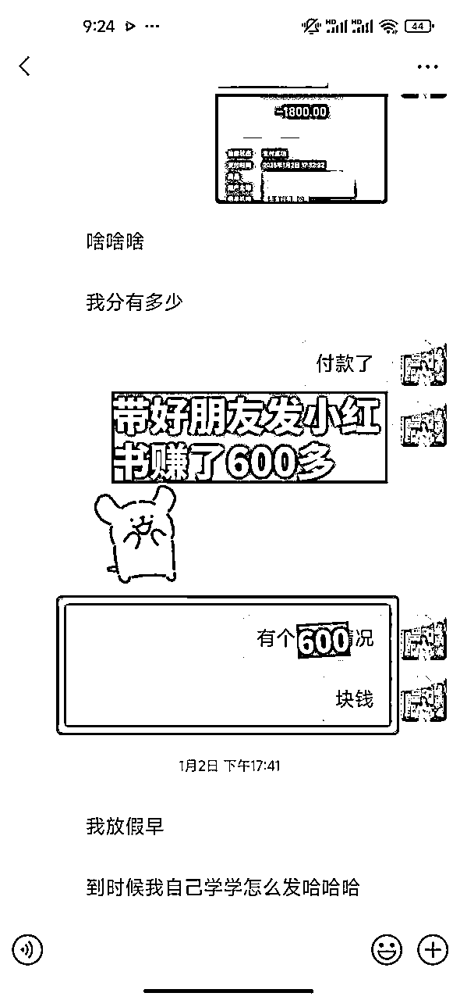

来源：https://f1prgchx24s.feishu.cn/docx/RZfIdA6SooQHyux24lPcQK20nLd
大家好，我叫蛙嘟嘟，一个零零后的教培老师，2024年4月开始加入生财，开始做境外游，目前的成绩是7个月成交40+单，80W+GMV，转化率10%+
最近两个月开始尝试做东北旅游，这个项目模式简单，成交链路比较短，快的话2-3小时成交，慢的话话2-3天也可以成交
因为这个东北旅游整体客单价不高，普遍费用是2-3k，另一方面是国内旅游，用户一般是出发前1-2周开始看团，更容易决策，利润也不低，一单利润200-1800不等，对新手比较友好
像我这个项目刚做1-2个月，也能有1.6w+的利润
带着朋友只发了几篇笔记，推荐2-3个客人，也带她赚到了600多块钱

教别的小伙伴跑通这个项目，进来客人也能在2-3天就成交
希望也给刚加入生财的小伙伴提供一些搞钱思路，附上这个项目的详细实操手册
东北旅游这几年特别火的项目，而且从每一年的11月份-3月份都是东北旅游的好时候，从旅榜排行中也可以看出来哈尔滨，长白山是排名前三的旅游目的地，需求很高
从最近的体感来说，1月20号到1月25号就是寒假的小高峰，景区限流车辆很多也排空空酒店满房，下一个小高峰就是1月28到2月5号的春节高峰期，需求也比较大，其实即使是过年后，到2月末还是有很多客人过来东北旅游，大家也不要错过这波吃肉的好机会
东北旅游的话，他主要分为三个目的地
走哈尔滨亚布力雪乡长白山这个路线，一般是七天六晚，小团大概的费用是4-5k（一般3k多的都是带购物或者自费，比较坑，毕竟羊毛出在羊身上，没有赚到成本就会想办法让你购物推自费来获利，从而可能会影响体验感）
费用高昂的原因主要是大环线的路程比较远，从哈尔滨开车到长白山市有七个半小时的车程，并且住雪乡里，1晚费用1-2k，毕竟雪乡赚钱也就是这几个月，所以费用也比较高
这个的卖点可以提炼为：雪乡比较好玩晚上也活动经常举办活动，来都来了，把东北这边经典的景点都给玩上
推荐走大环线的话做定制游，走大环线的客人一般都是家庭出行更注重品质，但是市场上的大环线费用高，4-5k，而且很多自费团或者擦边购物团给3k多，看似大差不差，特别卷，很难教育客人。
并且跟团走，自由度没有那么高，需要等其他人，只能照着行程走，还不如问清楚客人想去玩的地方，给他们做成定制，把他们想玩的地方都玩一遍，自由度高，想呆多久就呆多久，私密性来说也更好，适合家庭出行，一般一次来3个人或者以上，利润也不低
找的是本地的旅行社，接包车定制的价格实际上会比这个专业导游的更便宜一些，总体算起来费用也差不多，可以输出卖点更多：自由度高，私密性好，想玩的都能玩上
找旅行社定制，最优先就是价格，多对比几家，就可以知道费用，走一个团就可以知道一家旅行社品质是好与不好，沟通的时候要确认什么时候回款即可（一般是结团后三天内回款）
这个也是我卖得比较多的团，因为距离比较近相对的车程比较短，并且说这边的同样2000块钱在雪乡的话只能住一个很一般的炕而在长白山这边可以住到这边最好的酒店，即使是不是最好的酒店，2000多在长白山这边也可以玩的不错
性价比高的原因，车程比较近，而且住宿的费用相对比较划算，并且长白山这边交通不太方便，不容易打到车，要么包车要么跟团，包车的弊端就是个人生意，价格比较便宜，出事情没有保障，一般会推销卖东西，所以跟团需求就比较高
这个卖点可以提炼为：像我们自己自己的朋友过来来东北玩，也是推荐他们过来长白山玩，同样2000块钱在雪乡只能住一个很普通的炕，但是在这边就是能住一个特别好的酒店，玩的很好
这边的行程让长白山旅行社帮我做了一个两天三天四天五天的长白山的行程，游玩的内容一般是长白山天池雪岭漂流滑雪，根据客人游玩天数，给他们推荐合适的团
漠河我成交的客人比较少，一般是3天2晚，普遍价格大概是800到1400这样子，主要是走追北之旅去圣诞老人村北极村北红村，这个利润比较低大概是200-400，而且就是去漠河的车程一般是17个小时不太建议，最好还是做前两个利润比较高好卖
（话术：如果离的比较近的话，师傅可以送你们去，太远的话就不行，因为师傅也要回家吃饭）
（话术：费用包含接送站，保险，每日行程用车，门票：雪岭门票，长白山门票…）
比如我和客人说了含早餐但是有一晚住民宿不含早餐，我可以直接和她道歉，可能就会让她觉得说好的怎么没有了觉得我不靠谱，我的作法是先和旅行社沟通能不能安排旁边的酒店的话给他们送早餐，如果不行的话安排师傅给他们买早餐，因为答应了他说包含的早餐就这种小东西也不贵就可以送给客人，顺便和客人提一嘴这个小事，也帮她解决好，从而也体现出来你很对她的用心，后面有朋友想去东北旅游也会第一时间想到你
旅游总共分为流量-转化-交付三个部分，这次主要分享我的转化，这个部分也是我比较擅长的
每一个过来咨询的客人，尤其是国内，很可能是提前几天咨询的，尽量控制在2-3个小时回复，因为来咨询的客人一定是有需求的，没有找你肯定就是去找别人报名了
第一次打招呼，除了介绍自己也要给自己头衔经验，也可以加入自己是那个旅行社，做东北旅游多少年了，增强客户之间的信任感（因为我合作的旅行社比较多，所以不会放在开头，一般是付款前给他们看背书+线下门店视频增加信任）
了解清楚游玩时间/人数/天数/日期/想要的地方/客人的预算。从而给她匹配合适的团
一定要切记当需求没有了解清楚的时候，不要轻易到下一步就给客人找团，这样子也浪费你的时间，也不一定找出来匹配客人真实需求的团
对于成交来说，这个是最重要的一步
匹配最关键的就是价格
长白山这边价格控制在2k-3k，客人是可以接受（节假日另外说），游玩天数的话可以4天跟团游，3天市区自由行
走雪乡也控制5天行程，价格在3k+，客人也是可以接受，另外再安排两天自由行
遇到价格敏感型的客人可以把酒店换成民宿，就是因为节假日的话，酒店的费用会比较高一些，但民宿它的变动不是很大，民宿跟酒店之间的区别在于有没有温泉，含不含早餐，费用可以便宜一些，更容易成交
行程内容可以整理在常用语里面
一般有走大环线，大环线如果安排五天的行程费用的话，小团的费用在3k多左右，客人的话也是可以接受
走长白山延吉2k多，客人比较容易接受，然后就是一个内容介绍给他看，给大家看一下我几个素材几个版本
出方案的时候不要给她太多的选择，给她两到三个的选择，我一般是给两个，不然的话，他可能会挑花眼
把客人常问的问题编辑成百问百答，长白山这边很简单，常问的也就几个，解决不了的时候也要给他们其他的替代方案，比如客人需要发票开不了，因为要扣税，大家都不想多花钱，首先跟他解释清楚之后给他能开发票的地方都开发票，自己吃饭的地方也给她开
老李客湖，雪岭，漂流，滑雪这个项目就在北坡这边，只要这几个稍微了解一下即可，还有今年的云顶天宫也是20周年的那个盗墓笔记拍的比较大型也是可以做一个卖点，雪岭的卖点就是作为一个平替的雪乡，可以去木屋打卡，看驯鹿，还有雪地徒步也比较好玩
可以先把一些常见的问题，你先把它放在这个常用语里面，可以直接用这些常用语回答，提高效率
几个常见问题
咱们去天池走北坡，走北坡有个好处就是可以看天池
即使是天池没有开放，我们那边也有很多的小景点，北坡下坡比较多小景点可以观看，有长白瀑布，聚龙温泉群，绿渊潭，谷底森林这些，也很壮观
天池就是看天气，上面风太大就不开，不具备安全运营条件，这边有句话就是，遇见即幸运，不是你选择了天池，而是天池选择你，这个也是看缘分，天池一年开90多天，怀着期待的心情去看待这个事情
吃饭用餐50-60，丰俭由人，其他其实基本没有了
滑雪配了雪具，不含雪服雪镜头盔，如果你们想拍照好看可以租一个，也可以穿自己衣服，温泉酒店都是有赠送泡温泉，需要你们自己准备泳衣
我们是长白山本地旅行社，同样的品质，我们的价格相对其他旅行社更便宜的
一般是不给什么优惠，如果你确定要的话，我去帮你申请一下试试，最多可以给你们100-150，这样子可以接受吗？
天气这个问题真的不太好说，因为距离时间太远，天气预报也没有什么可以参考的。今年是暖冬，但是按照以往来讲，2月份还是有雪的
可以开票的，不过报价我们报价都是不含发票的，开旅游服务发票是加十个点
因为我们平时带旅行团，很少说开发票，所以给报价是，不含税的，总体费用就会比较低，不然费用下不来
或者你看这样好不好？
酒店住宿像亚朵皇冠，冰雪大世界门票这些门票，可以开发票我可以开成您的名头，这样没有税点
您可以把名头发过来，我能有发票的地方都开成你的
可以呀，我们师傅都很好说话，有需要和他们说一声就好了
如果客人说考虑一下，思考一下客人的顾虑是什么
一般的话就是价格问题，或者是你挑选的并不匹配，如果客人有其他意向的团，你可以跟他说一声，让他发一发，可以说我们是本地旅行社，同样品质的内容肯定比其他旅行社有优势，然后劝她来买你的团
当客人了解差不多的时候，你要进行一些逼单，比如说拿一些门票紧张/用房紧张/也有其他客人在问这个团让客人抓紧预定
好的交付会影响复购和转介绍
交付的时候一般就是旅行社直接交付，但是旅行社的话，他们往往就是直接找师傅来开车，所以费用会比较便宜一些，但玩的东西客人可能也不太清楚，我的建议是可以把网上一些常玩的整理给师傅，让师傅也和客人说一声，并且沟通一些东西可能没有那么好，一些细节可能有问题就需要说有一个交流群，这样子的话大家都在里面，有什么问题的话，大家也随时沟通跟旅行社保持联系
另一个有可能旅途中会有一些小细节，比如住民宿没有早餐，给客人先解决好早餐的事情再给告诉她；她想要开发票，我们吃饭能开发票的时候我也帮她开发票，这种下意识的惦记，不管是在平时的成交中或者谈恋爱中都会让人觉得特别舒服，也会给你加分，有朋友出去玩也会想到你
客人行程结束后，想去冰雪大世界没买到门票，也让朋友帮忙车他们去现场抢票，给他们想办法解决，他们知道你的好，帮忙发小红书，也帮我抓介绍了客人抱团
行程结束后，关心客人，了解他们的行程体验，好的可以晒单，不好的下次优化
接下来给大家分享一下我的做销售转化这几个月，总结的一些经验
减少焦虑：
第一个就是在聊天上捕获客人真正的需求，没有确认好客人需求的时候，不要急于给他推荐产品，这样子推荐的产品可能并不是最适合的产品。
在平时学习的时候，多拆解几个产品，总结一些热门产品的介绍，可以整理一些团拆解，海报，价格区间，核心卖点，路线，酒店水平，超跑团队的老师也给整理了一个拆解库，每次找团也可以关键字搜索，节约了很多时
第二个整理好你这个地方的百问百答，客人问你第一个问题的时候，你要把后面可能会问的二三四五也能想到，那此时客人就会觉得你非常靠谱，把对应的注意事项还有一些常见问题，适当的时候发给客人，客人就会觉得说你非常专业
第一个就是信任问题：我最开始发的朋友圈，都是那种产品广告，没有一点个人色彩，后来才知道其实解决信任问题最简单的就是，通过朋友圈晒客人聊天记录，展示我们的专业度和好评来解决，别人说你好，比自己说自己好更可信，多晒你的客人的用户证言，不用怕被人说太营销了。
酒香不怕巷子深，如果你不多发，别人就不知道你有多牛逼，没有展示你的交付实力，帮助别人获得了什么，给用户做了什么事情，那么别人又怎么放心把钱付给你呢？多分享交付过程和用户好评，口口相传就有了口碑，还能带来转介绍。
第二个就是回访：有很多人咨询了一次就不再找你了，这个时候我之前就很疑惑，为什么聊了几句就不找我了。
要明确一个点，有意向的客人他一定是有出行的需求，他没有找你报名，也会找其他人报名，在咨询你的同时，他也在找其他人咨询，当他没有找你的时候，有很多种原因
如果是产品不合适，那你就要跟他沟通有没有其他的需求，再帮她重新匹配一下，如果没有的资源，再去找其他旅行社合作，市面上的产品一定都是可以拿到，只要客人有意向，基本都能解决。
另外回访过程还有一个要点是，尽量给客人的情绪价值拉满，让他知道你很关心他的感受，这样子他能懂你的用心。而不是只是为了赚他钱，换位思考是你也不想回，对吧？
善于利用用户证言来发表自己的行程感受和体验，这个也是我经常用的方法，就是会使了自己的朋友圈，自动成交的概率会提高。
这不是说每天发一发付款截图就可以的，而是需要你触及到用户的痛点或者需求，甚至是他的一个共情之处，那么他就会对你产生信任，进而购买你的产品。
朋友圈的内容来自于哪？来自于你跟客人的交付，你的交付做得好，那你就要尽可能地在你朋友圈里面展示你的交付。
你跟客人交付的内容，体现了你做了什么事，对于客人有什么帮助，那么其他有同样需求的客人也会被你吸引到。
要做旅游IP号，而不是一个没有温度的旅游客服号。
做的时间长了，你会发现很多人问的问题，担心的问题，都是差不多的，这个时候我们把常见的回复，都整理好（持续优化话术）放在输入法里。
等到后面就可以直接复制粘贴给客户，大大节约了我们的时间，整理出百问百答，这个比较节省时间，拿过来就可以用，不会每次都去组织语言想怎么回答，我也会给自己几个号建个群，分享一些说的好的文字总结起来
以上就是我今天的分享，很感谢生财有术这个平台，提供的线下组局，让我每次有问题都可以找到小伙伴一起交流，还有航海，让我知道旅游航海开始我的副业，参加盖洛普航海解决我的内耗
同时也非常感谢炮爷和超人以及助教林枫老师的辛苦付出，让我学会了境外游，把它迁移到东北旅游
尤其是最近成交越来越多了，就会发现自己的内核越来越稳定，成交不了的时候也会去找问题解决问题。
自己能成交的不止一个地方换到其他地方，这种迁移能力也是在不断地增加，可能这也就是之前为什么选择小红书高客单生意。
通过做旅游这个事情，除了是能赚到钱之外，也提升了自己的核心竞争力，被我成交的客人，事业伙伴都会觉得我是个值得信赖的朋友，也会很认可我的为人处事，让我在这个过程中也得到很多的正反馈
也非常感谢生财有术这个平台，大家都在真诚分享，让我学会不断地真诚利他，做一个靠谱的人。
最后，希望今天我的分享能对大家有所帮助，可以参考一下我的方法，一起做小红书高客单旅游，一起来体验无痛出单的快乐，2025年我们一起生财有术！